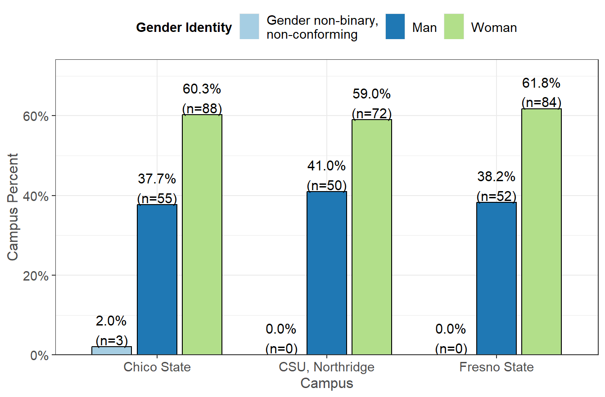
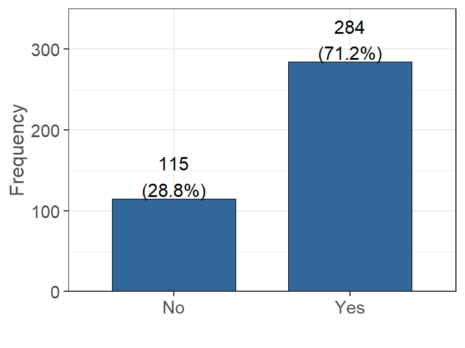
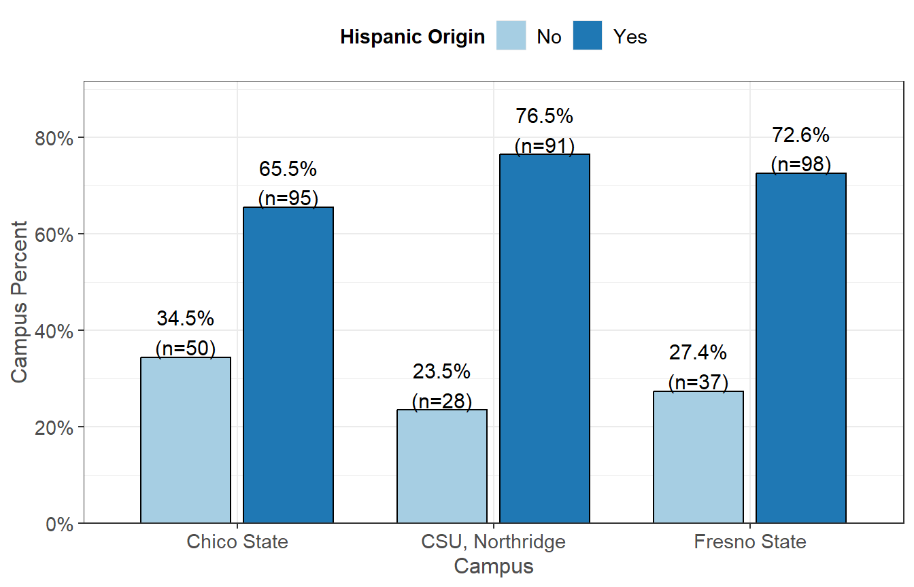
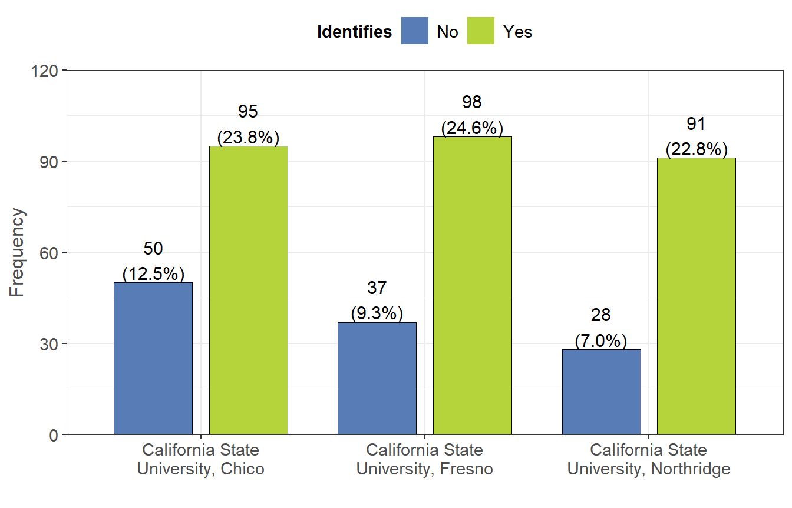

Personal Demographics
Age
 The age for participants in the survey range from 20.1 to 60.9 at the time of completion, with the majority of participants being between 20-30 years old. The average age of a participant in this survey (denoted by the dotted line) is 25.4 years old.
The age for participants in the survey range from 20.1 to 60.9 at the time of completion, with the majority of participants being between 20-30 years old. The average age of a participant in this survey (denoted by the dotted line) is 25.4 years old.
Gender Identity
What is your gender identity?  Of the people who participated in the survey, 244 of them identify as a Woman, 157 identify as a Man, and 3 identify as Gender non-binary, non-conforming. There are also people who preferred not to answer.
Of the people who participated in the survey, 244 of them identify as a Woman, 157 identify as a Man, and 3 identify as Gender non-binary, non-conforming. There are also people who preferred not to answer.
Hispanic Origin
In the US Census, Hispanic Origins are not races. Do you identify as Hispanic or Latino or Spanish Origin? Looking at the above graph we see 235 people identify as Mexican, Mexican American, or Chicano. 115 people do no identify as Hispanic, Latin, or Spanish Origin. 47 people identify as another Hispanic, Latino, or Spanish Origin. 2 people identify as Puerto Rican.
Ethnicity
What race do you identify as?| Measure | Percent |
|---|---|
| White | 155 (60.5%) |
| Other Asian | 37 (14.5%) |
| African American | 26 (10.2%) |
| American Indian | 26 (10.2%) |
| Vietnamese | 9 (3.5%) |
| Chinese | 6 (2.3%) |
| Filipino | 6 (2.3%) |
| Asian Indian | 3 (1.2%) |
| Other Pacific Islander | 3 (1.2%) |
| Chamorro | 2 (0.8%) |
| Korean | 1 (0.4%) |
| Japanese | 1 (0.4%) |
| Native Hawaiian | 1 (0.4%) |
| Samoan | 0 (0.0%) |

Marital Status
What is your marital status? The above graph tells us that the majority of people (325) are single or never been married. 36 people are married, and 31 are living with a partner.
Dependents
If you have dependents, then how many of them receive more than 50% of their financial support from you?  The majority of people who participated in the survey (319) claim to have 0 dependents. 43 people claim to have only 1 dependent, and only 35 people have 2 or more dependents.
Dependent Ages
What is/are the age(s) of these dependent(s)?  From the above graphs, the majority of dependents are under the age of 18. The ages of these dependents ranges from 0 to 100 with a standard deviation of 14.87. The average age for a dependent (denoted by the dotted line) is 13.87 while the median value is 10. The most common dependent age is 6, which appears 12 times in the data.
Parents Education
What is the highest level of education completed by your parents/guardians?  Note: Variables filled with yellow above are used to show the conditions used to build the First Generation variable in the next plot.
The highest level of education completed by most students parents is Less than high school (185). 78 students claim their parents highest level is High school diploma or GED, and 59 students claim their parents highest level is Some college. Only a minority of students have parents who have some type of college level degree.
First Generation
 Using the above information for parents highest level of education, a new variable was created to identify First Generation College Students. This was built upon the assumption that the parents highest level of education falls under one of the categories highlighted yellow above in the Parents Education graph.
Using the above information for parents highest level of education, a new variable was created to identify First Generation College Students. This was built upon the assumption that the parents highest level of education falls under one of the categories highlighted yellow above in the Parents Education graph.
From this information, we can see that 329 students who participated in the survey are First Generation College students and 73 students are not First Generation College students.
Funding
Partially funded by USDA SNAP, known in California as CalFresh, an equal opportunity provider and employer, and the California Department of Social Services. Any use of these results in further work must use the following citation:Center for Healthy Communities, "Basic Needs Survey", June 2020. Retrieved on xx-xxx-xxxx from https://chicocalfresh.github.io/bns-website/index.html